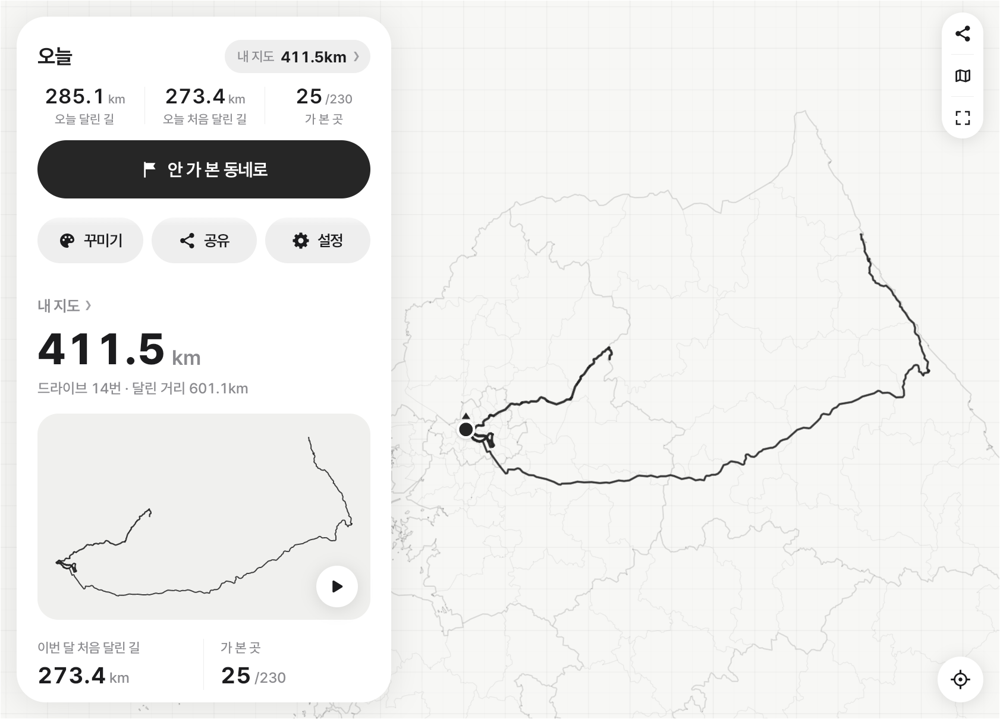
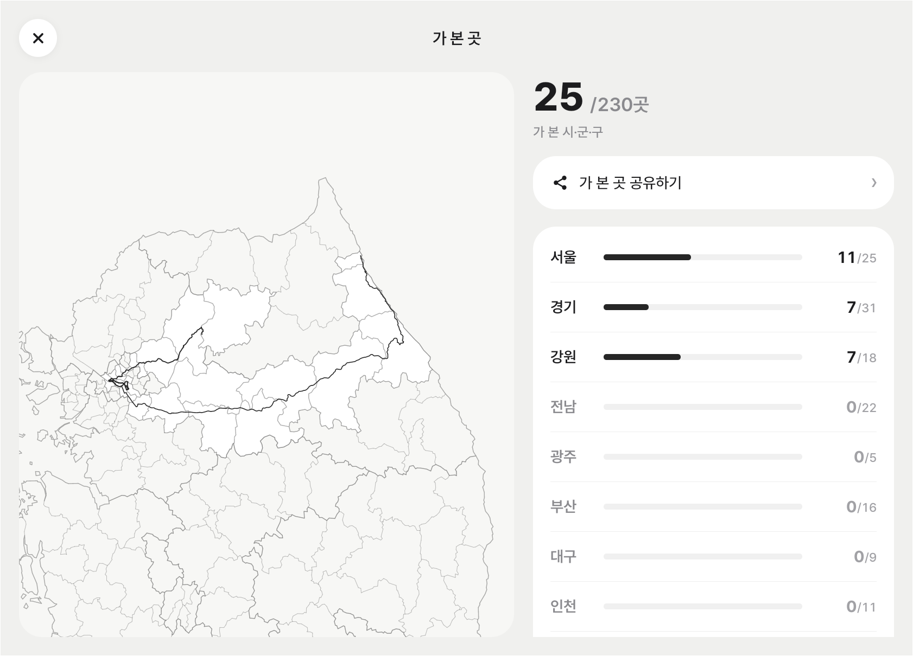
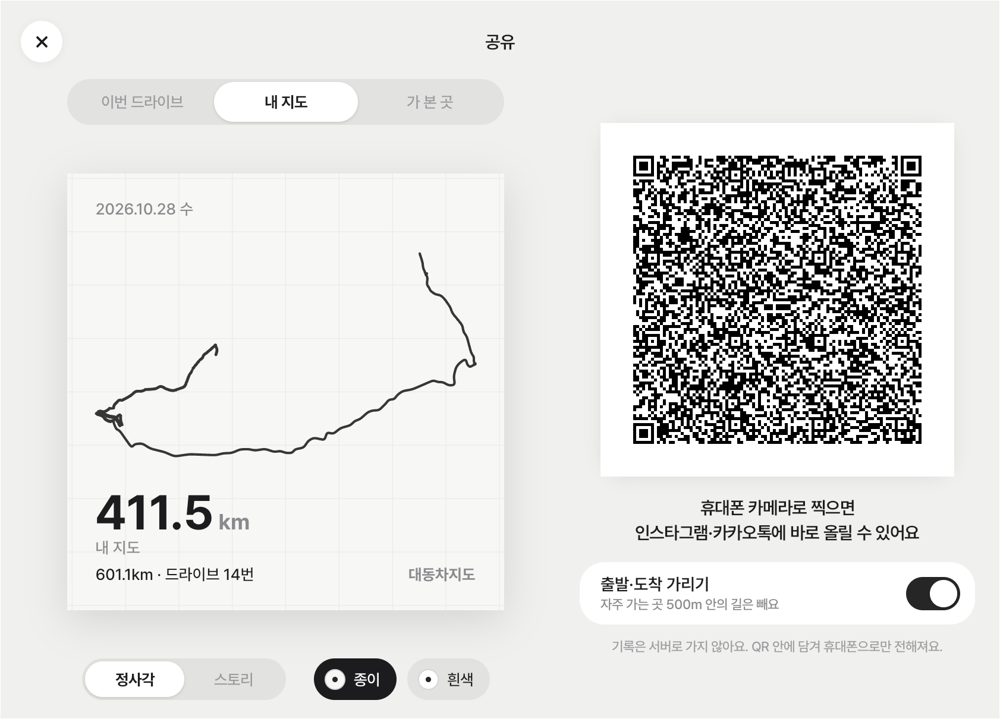

Pleos Connect 앱 · 현대자동차 공모전 출품작
대동차지도
大東車地圖
자동차(車)로 대한민국(大東) 땅(地) 위에 그리는 지도(圖)
달린 길이 지도가 된다
시동만 걸면 내가 달린 길이 나만의 지도가 돼요. 처음 달린 길과 처음 가 본 시·군·구를 세어 주는 드라이브 기록 앱이에요.
시연 영상
시동을 걸고, 달리고, 주차한 뒤 QR로 카드를 넘기기까지.
차 화면
Pleos Connect 화면 그대로예요. 지도·통계는 정차 중에만 열리고, 주행 중에는 음성으로만 알려 줘요.

내 지도 밤 배색
밤 배색
가 본 곳
QR 공유
무엇을 하나요
-
시동만 걸면 기록돼요
기어와 속도로 주행 시작과 끝을 알아서 판단해요. 앱을 켜거나 끌 필요가 없어요.
-
달린 길이 한 장의 지도로 쌓여요
같은 길은 한 줄로 합치고, 자주 달린 길일수록 굵게 그려요. 종이 위에 먹으로 그린 듯한 지도예요.
-
처음 달린 길을 따로 세어요
“오늘 42km 중 처음 달린 길 12.4km.” 익숙한 길 대신 새 길로 가 볼 이유가 생겨요.
-
전국 230곳 시·군·구를 모아요
처음 들어선 지역은 음성으로만 알려 줘요. 주행 중에는 화면을 쓰지 않아요.
-
QR 하나로 휴대폰에 카드를 넘겨요
정차 중에 공유를 누르고 휴대폰 카메라로 QR을 찍으면, 이 사이트에서 카드가 그려져요.
샘플 카드 보기
차가 QR에 담아 보내는 것과 같은 형식의 샘플이에요. 비율과 바탕을 바꾸고 저장·공유해 볼 수 있어요.
- 드라이브 카드주말 드라이브 · 가평 — 처음 달린 길
- 여행 카드강릉 여행 — 긴 길도 QR 하나에
- 내 지도지금까지 달린 길 전부, 자주 간 길은 굵게
- 가 본 곳전국 230곳 중 가 본 시·군·구
드라이브 기록은 QR 주소의 # 뒤에만 담겨요. 브라우저는 이 부분을 서버로 보내지 않아서, 카드는 휴대폰 안에서만 그려져요. 이 사이트는 분석 도구나 외부 요청을 쓰지 않아요.